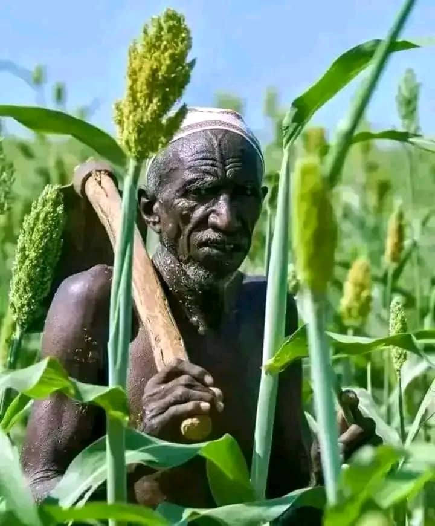
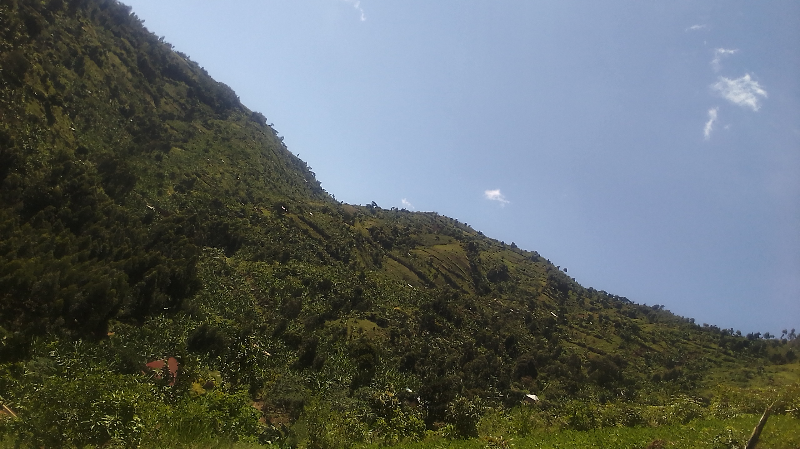
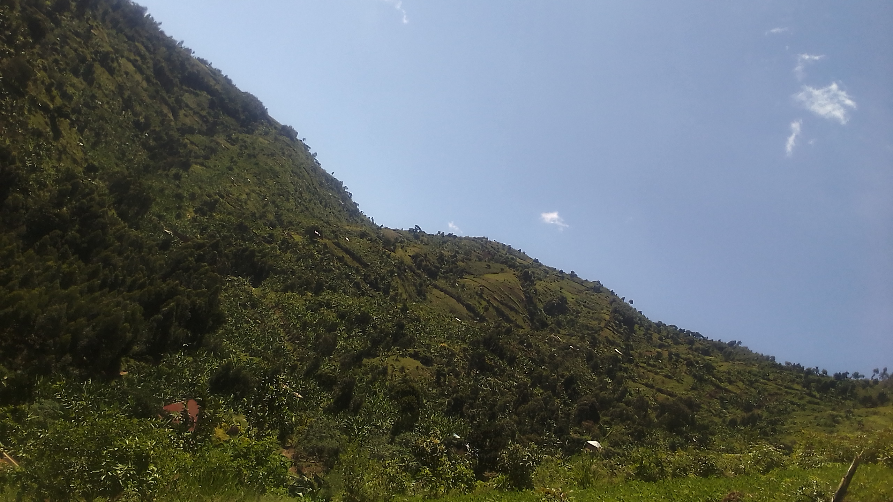

Our Training Areas
Sustainable Agriculture
Overview: Training local farmers in environmentally friendly agricultural practices that enhance soil fertility, conserve water, and protect local biodiversity.
Key Skills: Organic farming, agroforestry, crop rotation, water management, and pest control.
Impact: Improved food security, reduced deforestation, and more resilient farming communities.

Eco-Tourism and Hospitality
Overview: Providing skills to local communities to offer eco-friendly tourism services, helping them benefit from the growing interest in the Rwenzori Mountains.
Key Skills: Eco-tourism management, guiding, hospitality services, cultural tourism, and responsible travel practices.
Impact: Job creation, economic empowerment, and greater conservation awareness among tourists and local communities.


Handicrafts and Sustainable Livelihoods
Overview: Empowering artisans by teaching them to produce sustainable, eco-friendly products using local materials.
Key Skills: Handicraft production, natural dyeing, sustainable packaging, and marketing.
Impact: Increased income for local artisans, reduced dependency on destructive resource extraction, and preservation of traditional crafts.

Reforestation and Habitat Restoration
Overview: Providing hands-on training in reforestation and habitat restoration techniques to combat deforestation and habitat loss.
Key Skills: Tree planting, soil erosion control, invasive species management, and restoration planning.
Impact: Revitalized ecosystems, improved biodiversity, and enhanced climate resilience in local communities.
 

Why Training and Skilling Matter
Training and skilling are essential for building the capacity of local communities to effectively manage their natural resources while improving their economic well-being. Our programs ensure that individuals are not only capable of generating income through sustainable means, but also that they become active stewards of the environment.
By building local expertise, we create a future where both people and nature thrive. These skills are designed to empower individuals with the knowledge to protect the Rwenzori Mountains, mitigate climate change, and contribute to sustainable development.
Our Training Approach
- Hands-on Learning: Practical training methods that enable participants to gain real-world skills they can immediately apply.
- Community Involvement: Local knowledge and traditional practices are respected and integrated into our training programs.
- Partnerships: Collaboration with local experts, NGOs, government bodies, and international organizations to deliver the most impactful training.
- Continuous Support: Ongoing mentorship and resources to help participants implement what they’ve learned.
If you have any questions or would like to learn more about how you can get involved in environmental conservation, feel free to reach out to us:
Email: rwenzoricommunityconservation@gmail.com
Phone: +256 0777964063
Back to Top